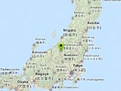

Smooth movement to GPS location

Example of a smooth movement to current GPS location.
Requirement: Location Service Component
Usage instructions:
Add this script to map GameObject and start the scene.
Click Goto marker, to smoothly move to the marker.
Add this script to map GameObject and start the scene.
Click Goto marker, to smoothly move to the marker.
SmoothMoveExample.cs
/* INFINITY CODE 2013-2019 */
/* http://www.infinity-code.com */
using UnityEngine;
namespace InfinityCode.OnlineMapsExamples
{
/// <summary>
/// Example of a smooth movement to current GPS location.
/// </summary>
[AddComponentMenu("Infinity Code/Online Maps/Examples (API Usage)/SmoothMoveExample")]
public class SmoothMoveExample : MonoBehaviour
{
/// <summary>
/// Move duration (sec)
/// </summary>
public float time = 3;
/// <summary>
/// Relative position (0-1) between from and to
/// </summary>
private float angle;
/// <summary>
/// Movement trigger
/// </summary>
private bool isMovement;
private Vector2 fromPosition;
private Vector2 toPosition;
private double fromTileX, fromTileY, toTileX, toTileY;
private int moveZoom;
private void OnGUI()
{
// On click button, starts movement
if (GUI.Button(new Rect(5, 5, 100, 30), "Goto marker"))
{
// from current map position
fromPosition = OnlineMaps.instance.position;
// to GPS position;
toPosition = OnlineMapsLocationService.instance.position;
// calculates tile positions
moveZoom = OnlineMaps.instance.zoom;
OnlineMaps.instance.projection.CoordinatesToTile(fromPosition.x, fromPosition.y, moveZoom, out fromTileX, out fromTileY);
OnlineMaps.instance.projection.CoordinatesToTile(toPosition.x, toPosition.y, moveZoom, out toTileX, out toTileY);
// if tile offset < 4, then start smooth movement
if (OnlineMapsUtils.Magnitude(fromTileX, fromTileY, toTileX, toTileY) < 4)
{
// set relative position 0
angle = 0;
// start movement
isMovement = true;
}
else // too far
{
OnlineMaps.instance.position = toPosition;
}
}
}
private void Update()
{
// if not movement then return
if (!isMovement) return;
// update relative position
angle += Time.deltaTime / time;
if (angle > 1)
{
// stop movement
isMovement = false;
angle = 1;
}
// Set new position
double px = (toTileX - fromTileX) * angle + fromTileX;
double py = (toTileY - fromTileY) * angle + fromTileY;
OnlineMaps.instance.projection.TileToCoordinates(px, py, moveZoom, out px, out py);
OnlineMaps.instance.SetPosition(px, py);
}
}
}